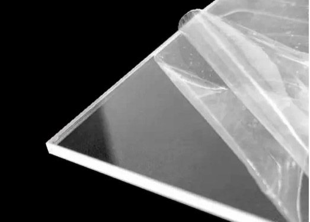

Módulo interfaz de usuario
Step 1: LM2596
Posicionar tarjeta electrónica LM2596 tal que la posición del potenciómetro sea la correcta, acorde a la perforación del panel. Atornillar usando llave allen M3 y 2 pernos M3X12.


Esta tarjeta tiene soldado un divisor de tensión de tal forma que pueda entregar un voltaje regulado entre 0.4-3V.
Step 2: Ajuste señuelo de carga
Ajuste de interruptores S1, S2, S3 en las posiciones 1, 0, 1 para que la tarjeta electrónica morada entregue un voltaje de 12 V.


La combinación de los interruptores puede variar acorde a la señalada. Para verificar por favor observe las combinaciones detalladas en la parte posterior de la tarjeta electrónica.
Step 3: Interruptores
Introducir señuelo de carga (tarjeta electrónica morada) con interruptor previamente soldado, a través de la perforación para el interruptor del motor ubicada en el panel. Este interruptor activa el motor vibrador y puede disminuir el moteado presente en el haz de luz del láser.
En caso de que desee utilizar el motor vibrador, lo debe acoplar al sujetador y este a la vez a la fibra óptica del láser para transferir las vibraciones.


Introducir el segundo interruptor a través de la perforación para el láser y presionar para fijar al panel. Este interruptor activa el láser
Para el soldado de los interruptores por favor considere el siguiente diagrama de conexiones eléctricas
Step 4: Ensamblaje de Señuelo de carga
Alinear la tarjeta electrónica morada con el adaptador plástico como se muestra a continuación.

Atornillar pernos M2x10 para fijar tarjeta electrónica.
Se recomienda colocar pernos en separador para evitar cortocircuito.


Insertar tuercas M3x10 y posteriormente fijar al panel.


Step 5: Fijación de cable adaptador M12
Introducir conector M12 desde el interior de la panel en su respectiva perforación. Posteriormente fijar la tuerca M12.


Step 6: Amperímetro
Introducir y presionar amperímetro en el panel. Fijar amperímetro con tuercas M3.


Step 7: Fijación de circuito limitador de corriente
Posicionar y fijar tarjeta electrónica 3x7cm en panel usando 4 tornillos M2x10 incluidos. Respetar orientación acorde a las siguientes imágenes.


La tarjeta electrónica solo está incluida en los kits cuyo láser tenga una longitud de onda de 405 nm o 638 nm. Para más información ingrese al siguiente enlace Circuito Limitador de Corriente
Step 8: Conexión de cables
Conectar cables A, B, C en la misma letra según corresponda. Conectar golillas K1 y K2 en las posiciones señaladas en amperímetro. Para la conexión de las golillas utilizar tuercas M3. Considerar el diagrama de conexiones eléctricas detallado a continuación:


Conectar cables 12V y FAN a tarjeta "laser driver" en puertos 1 y 5; alimentación de 12 V y ventilador respectivamente.
Para la conexión del puerto 2 (LD) del "laser driver", que corresponde a la salida de la fuente de corriente ajustable que alimenta el láser. Considerar lo siguiente:
En caso de que se incluya el circuito limitador de corriente: Conectar puerto 2 del "laser driver" directamente a la tarjeta con el circuito limitador de corriente. Y posteriormente desde el puerto de salida del circuito limitador de corriente, conectar el pin + al amperímetro (K1) y el pin - al ánodo del láser, tal como se ilustra en diagrama eléctrico anteriormente descrito.
En caso de no incluir circuito limitador de corriente: Conectar pin + del puerto LD del "laser driver" directamente al amperímetro (K1), y el pin - al ánodo del láser.
A continuación, se muestran fotografías del "laser driver" incluido en kit, junto a imagen representativa de las conexiones. Las especificaciones técnicas del "laser driver" las puede encontrar en el siguiente link Micost driver 500mA.


Los cables utilizados corresponden al modelo XH54 de 2 pines macho/hembra, pero se puede utilizar otro modelo que se disponga.
Step 9: Fijación del driver laser
Voltear tarjeta de laser driver orientándola tal que el potenciómetro quede bien posicionado. Juntar y apernar separadores S1 y S2 usando pernos M3X25 directamente en panel acorde a la fotografía. Posicionar y presionar separador S3 al panel. Finalmente apernar "laser driver" con 2 pernos M3x6 a los separadores.


Para kit que incluye láser de 638nm posicionar y presionar separadores S4 y S5, para posteriormente apernar laser driver de 4A. Las especificaciones técnicas del "laser driver de 4A" las puede encontrar en el siguiente link Micost driver 4A.
Step 10: Láminas protectoras del acrílico
Sacar láminas protectoras del acrílico de ambos lados

Step 11: Montaje de tapa acrílica
- Posicionar 4 tuercas M3 como se muestra en la siguiente imagen.

- Orientar tapa de acrílico como se muestra en la siguiente imagen.
- Encajar separadores a 4 pernos M3x10, posteriormente apretar.
- Pegar gomas antideslizantes en cada perno.

Step 12: Ensamblaje de perillas
Posicionar y presionar perilla 1 en perforación de motor y perilla 2 en perforación de láser del panel. Posteriormente superponer perillas para mejorar agarre.


A continuación, se comparte fotografía del módulo láser completamente ensamblado.